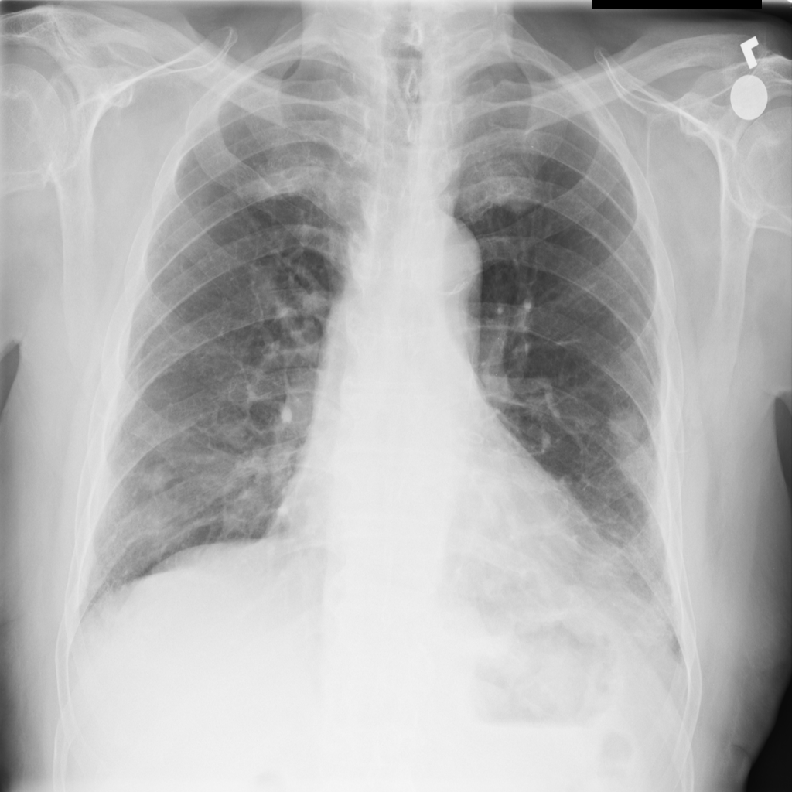

In recent years, the high rates of emergent lung disease have revealed a weakness in emergency medicine: emergency radiology.
Traditionally, when a patient is admitted to the ER and has a chest X-ray performed (CXR), that CXR is entered into a waiting list to be
read and interpreted by a radiologist. This interpretation is required for patients to receive any sort of active treatment or further
hospitalization. From the time a CXR is taken, it can take several hours for the radiologist to return an interpretation to the ER staff,
and without that interpretation, ER physicians cannot recommend any type of treatment for their patient. This means that while the ER physician
is waiting for the radiologist's report, the patient is effectively on standby, regardless of the severity of their symptoms.
Unfortunately, most hospitals do not have radiology triage systems in place and as a result, emergent patients requiring immediate surgery
will end up on the same waiting list as less dire patients, with no indicator way for radiologists to know which patient charts need to be
prioritized. This lack of a useful CXR triage system results in longer healthcare wait times for emergent conditions requiring surgery,
which can increase the mortality rate for those conditions.
The goal of this model will be to create a machine learning model that can function as a triage system for this waiting list, flagging the
higher-risk CXRs based on the presence of visual anomalies associated with higher-mortality conditions. With this triage system, radiologists
can ensure that they are prioritizing the patients with potentially deadly conditions, reducing the rates of Adverse, Sentinel, and Never
Events in ER settings by decreasing the amount of time from ER admittance to hospital admittance for emergent patients.